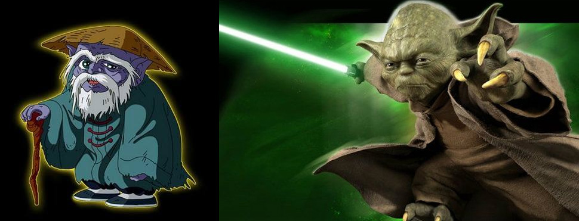

第三百零二章 冥王神话
昨天被打扰的事情……
毫无疑问的，是一起看书这件事，这是昨天的“偶遇”后原本去图书馆目的，只是中途因为关于二战的话题而被春日搅和了。
月姬和疾风还有菲特并没有就这件事有过什么约定，所以月姬总得找个借口，这样上门才不会显得唐突不是吗。
“疾风似乎很喜欢看书的样子啊，今天我借了一本不错的小说一起看吧。”
把袋子放下，月姬从里面掏出了一本书，既然是要一起看书，当然要自带一本比较少见的书才行，不然带一本鲁滨逊不是很没意思。
“这本书，看起了好像很有年份的样子呢。”疾风伸出双手从月姬手上接过她拿出来厚皮书，泛黄的书页透露着沉甸甸的历史气息。
“如果没意外的话，可能全世界只有这一本吧。”
月姬的话，让接过书的疾风马上后悔了，要是弄坏了怎么办？！
“似乎是一本没听说过的神话小说的抄本。”看着疾风进退两难的可怜样子，月姬笑了笑把书拿了回来，翻开书页摊在膝盖上，“不是日语写的，你们可能看不懂，我读给你们听吧……”
“那是一年夏天，为了调查冥王君异常动向的我，只身去了动荡中的西西里亚，在一个小城附近，我确实遇到了冥王军，并且，还遇到了拥有小宇宙的奇妙少年，与希绪弗斯一样，我至今也为将这个孩子带到圣域让其成为雅典娜的圣斗士这件事是否正确而感到困惑，我们将这三个孩子卷入了数千年来一直持续的战争之中，不，作为雅典娜转世的少女和被选上成为哈迪斯容器的少年，他们本就处于这场战争的最中心，只是，如果没有我们的话，或许，他们能够晚一些分别，更晚一些面临那令人惋惜的命运吧……”
比较少见的书很多，有趣的也很多，不过月姬选择的是可能全世界只有一本的《冥王神话》——这是城户老头不知道从哪里弄来的书，记录着十八世纪那次圣战发生的事情。
这虽然算是古籍，并且还是城户光政的遗物，但是纱织倒不是那种守着死物止步不前的人，虽然纱织今天不知道为什么早早就不在家了，但是她宅邸里的佣人们都被她打过招呼，见月姬如见她，所以月姬早上过去的时候很顺利的从纱织家把这本书拿了出来。
月姬无法去证实这究竟真的是曾经发生的事情还是单纯的是某个人的妄想，毕竟，连奈叶都有着庞大的潜力，而作为神的人间体，纱织身上的味道为什么泯然众人？不合情理呢……
不过怎么样都无所谓了，时间会向她展示一切真相，抛开令人困惑的事情，这本书，确实是个好故事，虽然这本书没有作者署名，但是月姬没猜错的话，它的作者，应该就是守望者瀑布的那位老者——尤达大师吧……
月姬倒是没想到，在那种时代，在一群只会打打杀杀的粗人中，作为最能打的十二个扛把子之一的那家伙，竟然还有着不错的文学修养，写的回忆录看起来还挺像那么回事，意外啊，意外。
月姬的声线很好，所以轻声的诵读听起来也很舒服，菲特和疾风一左一右的坐在月姬的身边，看着月姬膝盖上慢慢翻过的泛黄的书页上的字，是汉字，很繁琐的样子，看不懂，不过月姬的声音却让她们可以勉强去读里面的内容。
安静的房间里，除了轻微的呼吸声，就只有书页翻动的声音不时的响起，时间在静谧中流逝。
……
【彻底堕落了系列，又是千字章节，作为一本刀剑神域的同人，我在思考，剧情还能够挽救吗】